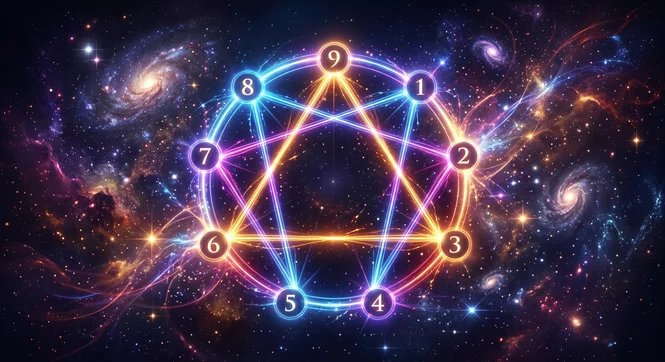

Nikola Tesla inmortalizó una frase que alteró para siempre nuestra comprensión del universo: "Si supieras la magnificencia de los números 3, 6 y 9, tendrías la llave del universo" . Sin embargo, más allá de la mística popular y las teorías de internet, comprender exactamente qué es el patrón de tesla requiere adentrarse en la física de la resonancia, la geometría de vórtices y la manera en que el cerebro procesa estímulos acústicos externos. Si has intentado manifestar o cambiar tu realidad sin éxito, es probable que estés ignorando la estructura matemática detrás de cómo el subconsciente asimila la información.
A lo largo de la historia, las grandes mentes descubrieron que la naturaleza no opera de forma azarosa. Existe una plantilla oculta en la materia, un patrón matemático recursivo donde el 3, el 6 y el 9 actúan como vectores de energía libre. Al trasladar este principio a la neuroacústica moderna, descubrimos que la mente humana reacciona con una precisión asombrosa a los estímulos que siguen esta arquitectura de resonancia armónica.
La geometría del Universo: ¿Qué es el patrón de Tesla y cómo funciona?
Para entender la raíz de este concepto, debemos recurrir a la matemática del vórtice (desarrollada por Marko Rodin). Si analizamos los patrones de duplicación celular o energética del mundo físico (1 que se duplica en 2, 2 en 4, 4 en 8, 8 en 16 que reduce a 7, 16 en 32 que reduce a 5...), notaremos que los números 1, 2, 4, 8, 7 y 5 crean un circuito cerrado de materia densa. Sin embargo, los números 3, 6 y 9 jamás entran en este ciclo. Pertenecen a un vector superior.
⚠️ AVISO TÉCNICO: El 3 y el 6 representan los polos magnéticos de la energía oscilante, mientras que el 9 es el nodo central de la completitud, el flujo directo desde el campo cuántico. El patrón de Tesla describe esta trinidad matemática como la estructura fundamental de la energía en vibración.
Cuando aplicamos el codigo nikola tesla 3 6 9 a la actividad cerebral, observamos un fenómeno fascinante. El cerebro no responde a conceptos abstractos, sino a patrones de frecuencia física. La actividad eléctrica de la corteza cerebral, medible mediante la Electroencefalografía , sigue patrones oscilatorios que pueden ser entrenados por impulsos audibles pasivos.
- El Número 3: Representa la intención focalizada y la activación del hemisferio cerebral izquierdo (lógica y dirección).
- El Número 6: Representa la integración emocional y el hemisferio derecho (creatividad, receptividad y visualización).
- El Número 9: Representa el estado de sincronización interhemisférica, donde la mente analítica cede el control a la receptividad subconsciente.
Muchos practicantes intentan aplicar esta ley escribiendo frases en un papel tres veces por la mañana, seis por la tarde y nueve por la noche. No obstante, si la frecuencia cerebral de la persona permanece atrapada en ondas Beta de estrés o hiperactividad, la barrera del factor crítico mental impedirá que la afirmación penetre en el subconsciente. Por esta razón, el método de escritura tradicional suele fallar si no se acompaña de estimulación sonora directa.
El vínculo entre el patrón 3-6-9 y la reprogramación subconsciente
Tu subconsciente es una máquina de procesamiento de patrones. Se calcula que administra más del 95% de tus decisiones, sesgos y percepción de oportunidades diarias. Cuando intentas cambiar una creencia limitante relacionada con el dinero, el éxito o la salud mediante la sola fuerza de voluntad, estás utilizando únicamente el 5% de tu capacidad mental.
Para reprogramar estos circuitos profundos, se requiere alterar la tasa de oscilación neuroacústica. Al utilizar una frecuencia 369 hz para manifestar dinero rapido o reordenar patrones de escasez, el objetivo real no es "hacer magia", sino inducir una respuesta neurofisiológica de coherencia entre el corazón y el cerebro. Sin embargo, aquí es donde la mayoría tropieza con una trampa técnica invisible en la era digital.
¿Estás intentando manifestar con audios comprimidos?
La mayoría de las personas escuchan tonos 3-6-9 recortados por plataformas gratuitas. Descubre cómo la tecnología de QuantumAudio® entrega frecuencias en estado puro sin compresión para reprogramar tu subconsciente de forma pasiva.
Acceder al Audio Máster 24-BitLa trampa digital: Por qué los audios de plataformas gratuitas no funcionan
Si alguna vez has buscado ondas binaurales o el código de Tesla en plataformas como YouTube o Spotify para cambiar tu mindset o conciliar el descanso, es probable que no hayas experimentado resultados tangibles. La razón detrás de esto no es la invalidez de la frecuencia, sino la compresión destructiva del archivo.
Las plataformas de streaming gratuito utilizan algoritmos de compresión con pérdida (como MP3 u OGG Vorbis) para reducir el tamaño del archivo y ahorrar ancho de banda. En este proceso de compresión, los algoritmos eliminan quirúrgicamente las microfrecuencias armónicas y los pulsos subaudibles que el ojo humano no nota, pero que la corteza cerebral requiere para el arrastre de ondas. Puedes revisar un análisis detallado sobre este problema en nuestro artículo sobre por que los audios de youtube para insomnio no funcionan o para manifestar.
| Característica Acústica | Audios Gratuitos (MP3 / Streaming) | QuantumAudio® (WAV Máster 24-bit) |
|---|---|---|
| Fidelidad de Onda | Comprimida (Pérdida del 60-80% de datos) | Espectro Puro HD (Sin compresión) |
| Resonancia de Frecuencia | Distorsionada por artefactos digitales | Matriz Matemática 3-6-9 Exacta |
| Impacto Neuroacústico | Superficial (Solo efecto relajante leve) | Profundo (Sincronización interhemisférica) |
| Esfuerzo Requerido | Requiere concentración / Meditación activa | 100% Pasivo (Escucha directa) |
Cuando la microestructura de una onda 3-6-9 se destruye por la compresión digital, el cerebro percibe el sonido simplemente como un ruido plano o una música de fondo agradable, perdiendo toda su capacidad de estimulación física directa sobre el sistema nervioso parasimpático.
El Secreto de QuantumAudio®: La Matriz Matemática en Audio Máster HD
La solución para aprovechar verdaderamente la matemática de Nikola Tesla radica en la pureza de la señal. QuantumAudio® no es simplemente un conjunto de notas musicales relajantes. Es un activo neuroacústico diseñado con precisión quirúrgica en formato audiofónico WAV de 24 bits a 96kHz, preservando hasta la última microfrecuencia requerida para el arrastre de ondas cerebrales.
Al reproducir la estructura pura del patrón de Tesla en tu cerebro, suceden tres procesos clave:
- Desactivación de la Rumiación Mental: La arquitectura de la onda neutraliza la hiperactividad del pensamiento analítico, reduciendo la producción de Cortisol y aliviando la tensión acumulada.
- Alineación de Frecuencia Subconsciente: Se facilita la transición natural a estados Alfa y Theta, la ventana exacta donde las sugestiones y decretos de abundancia penetran sin resistencia.
- Acción 100% Pasiva: No necesitas años de práctica en meditación, ni aprender técnicas complejas de respiración, ni esforzarte por "dejar la mente en blanco". El estímulo funciona por física acústica sobre tu sistema nervioso.
Experimenta la Frecuencia Pura del Código 3-6-9
Desbloquea el poder pasivo de la neuroestimulación en alta definición de 24 bits. Descubre cómo QuantumAudio® elimina los bloqueos subconscientes sin esfuerzo.
Obtener QuantumAudio® HoyCómo integrar el patrón 3-6-9 en tu rutina diaria sin esfuerzo
Integrar el principio de Tesla en tu vida no debe convertirse en un trabajo estresante ni en otra obligación de tu agenda. Para obtener la máxima eficacia en la reprogramación mental, se recomienda optimizar la ventana de entrada al descanso o el momento posterior al despertar.
- Al Despertar (Ventana Theta): Los primeros 15 minutos del día tu cerebro se encuentra de forma natural en un estado receptivo. Escuchar la frecuencia pura en este periodo establece el tono de tu enfoque diario. Puedes profundizar en esto en nuestra guía sobre que escuchar en la mañana para reprogramar la mente subconsciente al despertar .
- Antes de Dormir (Ventana Delta/Alfa): Mientras te preparas para descansar, colocar tus auriculares y permitir que el audio trabaje de forma pasiva ayuda a disolver los patrones de estrés acumulados durante la jornada.
- Durante la Fases de Trabajo Profundo: Utilizar la resonancia como sonido de fondo a un volumen moderado estabiliza la atención y evita la dispersión cognitiva.
Entender qué es el patrón de tesla abre una perspectiva completamente nueva sobre cómo nos relacionamos con la energía, el pensamiento y la biología humana. Nikola Tesla no estaba hablando de misticismo irracional, sino de la arquitectura matemática que gobierna todo el universo manifestado. Cuando alineas tu mente con esa misma arquitectura mediante las herramientas tecnológicas adecuadas, el esfuerzo disminuye y los resultados comienzan a fluir de forma natural.